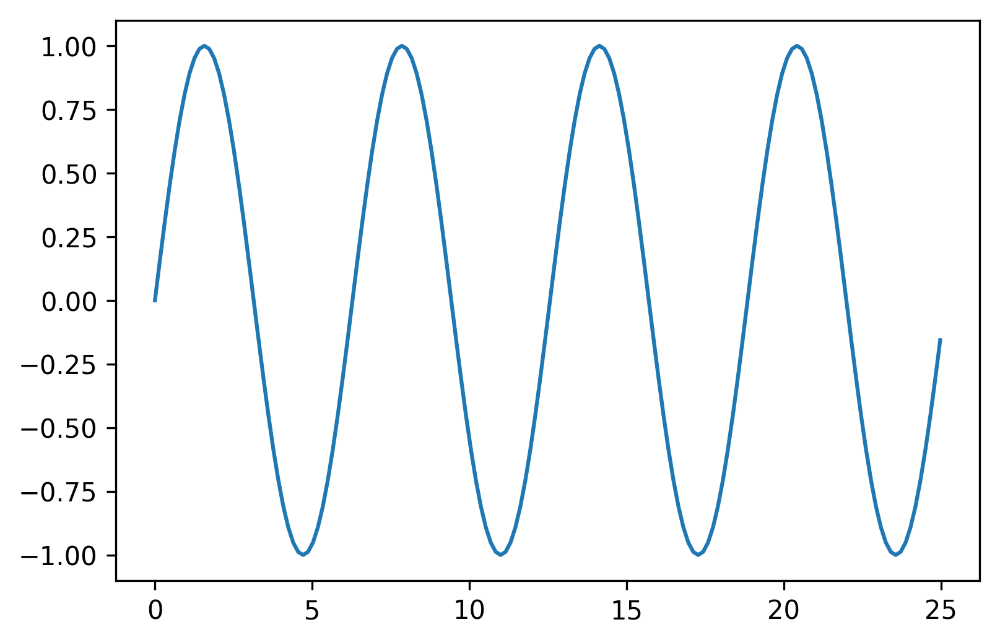
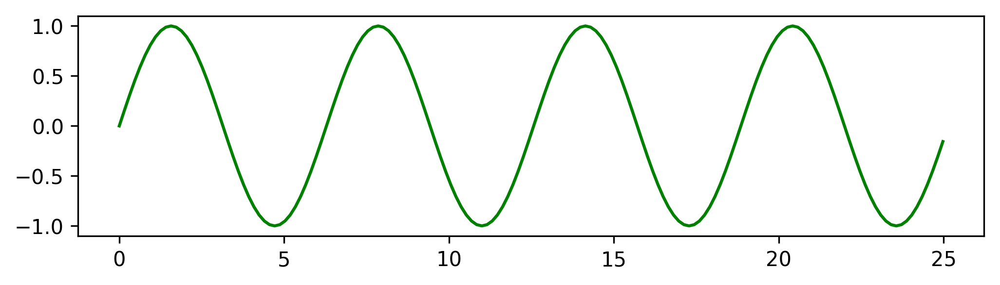
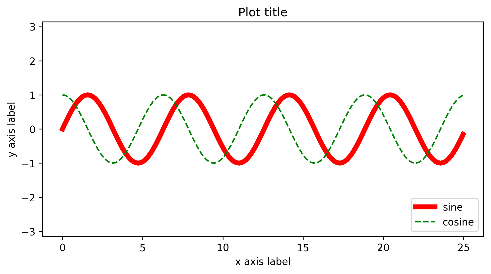
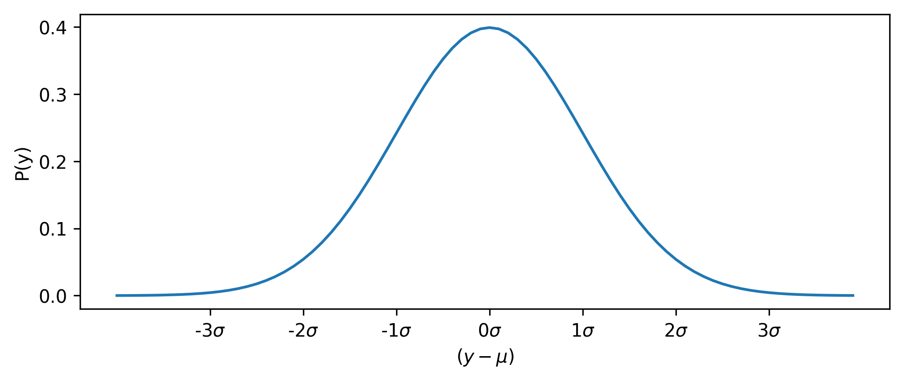
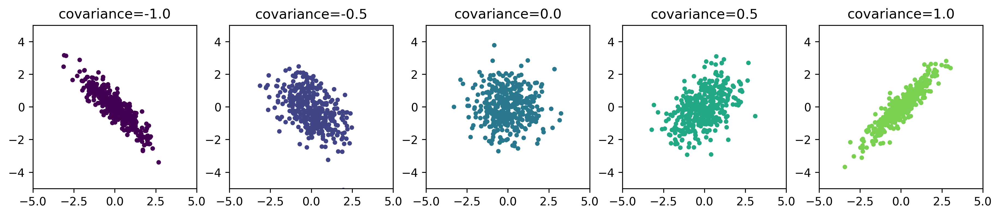
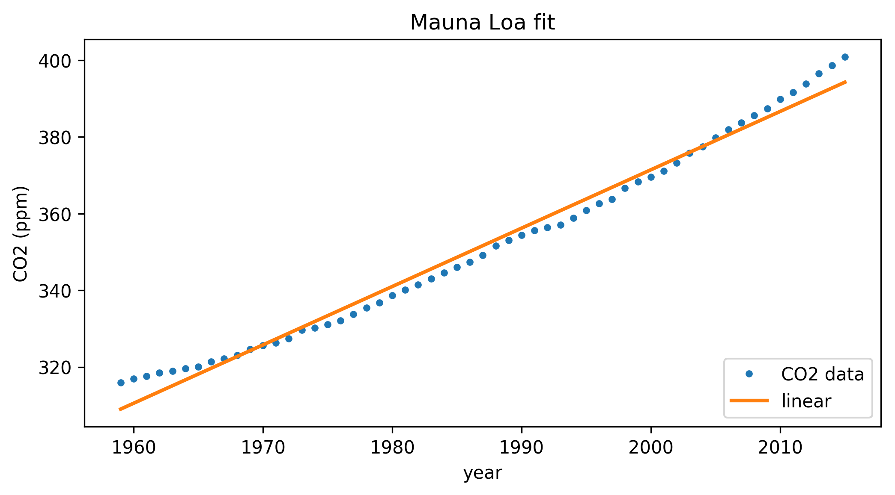

Throughout the course you will use the Python language to analyze the data you collect, to plot figures and calculate physical quantities. This tutorial covers the basics of using Python, saving and loading data, and plotting data and fitting the data using curve_fit.
You can find alternate material on the Department of Physics compwiki that covers many of the same topics but written by different people. In the 3rd and 4th year courses (e.g PHY407) you will use a textbook called Computational Physics with Python, and sample chapters introducing Python and the plotting libraries can be found at the author’s website.
If you have taken a class covering Python before and want to skip ahead. Try answering the exercises below or the exercises on the Physics compwiki Questions and Solutions page. More advanced material can also be provided.
Python is generally used as a scripting language : Scripts are files that contain programs and functions. Scripts interact with data files and other programs. A script file (here named script.py) can be run from the command line using the python command.
python script.py
Expressions and functions can also be called from an interactive interpreter launched by the python command without listing a script to run.
python
#My version prints the following at the start
Python 3.6.0 |Anaconda custom (x86_64)| (default, Dec 23 2016, 13:19:00)
[GCC 4.2.1 Compatible Apple LLVM 6.0 (clang-600.0.57)] on darwin
Type "help", "copyright", "credits" or "license" for more information.
>>>
Introduction
Interpreter / Shell
You can use the Python interpreter as a calculator
3+58
3.141592 / 21.570796
(1+1+2+3+5)*5 - 24/352.0
9**281
Python is an evolving language and has some quirks. In Python 2 (the older version of Python) the calculation 9/4 produces a different answer to Python 3 (the latest version of Python).
This happens because the ‘/’ operator is treated differently in the two versions, but produces the right answer in both cases if you understand the behavior. In Python 2, when you divide two integers (numbers without a decimal point), the answer will also be the nearest integer. In Python 3, the divide operator always converts integers into floating point (or real) numbers. Including the decimal point in your floating point numbers will help protect you from this problem. Unlike in Matlab, there is no ./ operator to force a floating point division.
9 / 42.25
9. / 42.25
You can force an integer division using the // operator
9//42
Whitespace
Whitespace is often important in Python. Whitespace characters are characters in the program that often appear empty, like spaces and tabs. When writing Python code everything with the same indentation is treated as the same block of code, to be executed in order.
The number of spaces or tabs at the start of each line is important and needs to be consistent. The number of spaces/tabs you use is not important but 4 spaces for each indentation level is common. Some text editors allow you to show whitespace characters (to maintain a consistent indentation) and convert tabs to spaces (to save typing 4 spaces each time, for example).
Comments
Any text appearing after a # will be treated as a comment and ignored by Python, e.g.
# A comment at the start of a line
val = 1. #another comment, val is a value.
#val= -1val is set to 1 in the above code. The line changing it to -1 is a comment and is not executed.
Functions
A function is a block of code that can be called by other programs or functions. Functions usually perform some work, and might return a value, save a file, plot a graph, etc.
Functions are called using their name and providing the function values in a comma separated list in parentheses (also known as the arguments to the function), e.g.
add(3,2)calls the function add with two arguments, 3 and 2. The function name can be meaningless but should describe the behavior of the function if possible. If the answer from add(3,2) was not 5 you would be annoyed!
Numbers
Python has built in numerical types like integers, float, long, and complex.
integersrange from -2 billion to + 2 billion.longnumbers are integers that can be infinitely large.floatnumbers are 64-bits long, and can hold numbers from about -2e300 to 2e300, and can be as small as 2e-300.floating point numbers typically hold 14 digits of accuracy.complexnumbers are made from twofloatnumbers.
If you mix numerical types in your code, Python will convert values to the largest type it needs, usually integers -> long -> floats -> complex. You can force a conversion using the functions float,int,long, and complex.
float(1)1.0
int(3.14159)3
complex(3)(3+0j)
complex(float(3.14159),int(2.71828))(3.14159+2j)
You can check the type of a variable with the type function
type(1.0)float
type(1)int
Strings
Strings are defined using single or double quotation marks
'a string'
"also a string"
Strings can be concatenated with the + operator, and duplicated with the *** operator.
a='eggs '
print(a)eggs
print(a+a)eggs eggs
print(a*4)eggs eggs eggs eggs
Characters in a string can be accessed using square brackets, e.g.
b=a*4 # eggs eggs eggs eggs
print(b[0]) #indexing starts at 0! This is the first 'e'e
print(b[14]) #The space between words is also a characterprint(b[13]) #s in Python 2s
Logic and Boolean data types.
Python supports logical values (also known as Boolean data types) with the values True and False. Every other data type in Python can be interpreted as a Boolean data type, most of them are equivalent to the Boolean True. Special Values that are equivalent to False include the number 0, an empty string, an empty list/array. In general, you shouldn’t rely on these equivalent values and should check explicitly for the values you want to consider.
Python also supports the logical operators and, or, and not, and the comparison operators <,<=,==,!=,>=,>.
True and False #False
True or False #True
not True #False
True and not False #True
a < b # True if a is less than b
a <= b # True if a is less than or equal to b
a == b # True if a is equal to b
a != b # True if a is not equal to b
a >= b # True if a is greater than or equal to b
a > b # True if a is greater than b
a and True # True if a is interpreted as True
a and False # False always.
and four examples of possibly unexpected resultsv (assuming a is defined)
a or True # a
True or a # True
a or False # a
False or a # aVariables
You can save values in variables
x=3means save the value of 3 in the variable x. Whatever value was previously in x is lost unless you store it somewhere else. Variables can be reused in other expressions, including saving them to other variables
x=3
y=x
z=x * x
x=0 #changes x from 3 to 0, but doesn't affect y or z
y=0 #changes y to 0Operators
The common mathematical operators work as expected in Python
- x + y -> add
- x - y -> subtract
- x * y -> multiply
- x / y -> quotient (divide)
- x // y -> integer quotient (divide)
- -x -> negate x (unary minus)
- x**y -> raise x to the power of y
- x % y -> remainder of x / y
Loading modules, libraries, or packages
Python provides many standard modules (also called libraries, or packages) for you to use, and many others are available for free from package repositories like pypi.python.org
Loading a module is called *import*ing. You can import an entire module using
from math import *or just part of the package
from math import sin, cosYou can import a module and keep it as a separate namespace to protect your functions from being overwritten,
import math #use math.sin instead of just sinimport math #import the library
math.sin(0.5) #Calculate the sin of 0.50.479425538604203
import math as mylib #import and 'rename' the library inside your code.
mylib.sin(0.5)0.479425538604203
from math import sin,cos #just import sin and cos
sin(0.5)0.479425538604203
from math import * #import all functions from the library into your 'namespace'
sin(0.5)0.479425538604203
Importing entire modules using import * can be covenient, but can also be dangerous. If two packages define
the same function or variable the last package to be imported overwrites any earlier imports.
Exercise 1
What are the results of the following expressions? You should use the Python shell to get your answer.
- False and True
- True or False
- True and False or True
- 2>0
- not True
- not 1
- 3*5+8
- 3*(5+8)
- (3*5)+8
- What is $sin(90)$? and $sin(1.570596)$? (using the sine function from the math package)
- What is 98⁄6?
- What is the remainder of 98⁄6?
- What is $2^2$, $2^2+2$, $2^{2+2}$?
- Calculate the base 3 logarithm of the number 27. The math package provides the natural log function log and the base 10 function log10.
Functions and Objects
Defining functions
Functions in Python can be created using the following syntax
def function_empty():
pass #literally do nothing
def function_taking_parameters(parameter, keyword=default_value):
some code
def function_returning_a_value(parameter, keyword=default_value):
some code
return valueThe function name can be (almost) any string. There can be zero or more parameters, whose position is important, and zero or more keywords, whose position is not important. Keywords always have a default value associated with them. If you call the function without a keyword, it will be available inside the function with the default value.
def func(a,b,c,d=1,e=2,f=3):
print(a,b,c,d,e,f)
func(1,2,3) # prints 1,2,3,1,2,3
func(1,2,3,d=4,e=5,f=6) # prints 1,2,3,4,5,6
func(1,2,3,e=5) #prints 1,2,3,1,5,3
func(1,2,3,e=5,d=4) # prints 1,2,3,4,5,3
# func(1,2) # error, not enough positional parameters1 2 3 1 2 3
1 2 3 4 5 6
1 2 3 1 5 3
1 2 3 4 5 3
Functions can return no value, a single value, or a group of values
def func1():
return
def func2():
return 1
def func3():
return 1,2Containers
Python provides a number of containers - objects designed to hold other variables.
Lists
The list container stores an ordered group of variables whose ordering is determined by their position in the list.
list1 = [0,1,2,3,4,5] # a list of integers
list2 = ['a','b','c','d','e'] # a list of strings
list3 = [0,'b','c',3,4,'f'] # a list of strings and integers.Each element, or entry, in the list can be accessed using square brackets, starting from element 0
list1[0] # 0
list2[0] # 'a'
list3[5] # 'f'Accessing negative elements is the same as counting from the end of the list, the last element in the list being -1 (not -0).
list1[-2] # 4
list1[-5] # 1You can create a list using square brackets [] or the list function.
a=list() # an empty list, this calls the 'list' function
b=[] # a second empty listDictionaries
A dictionary stores a group of keys and values in a way that lets you look up the key quickly and get the value from the dictionary.
dict1={'a':1,'b':2,'c':3}
dict2=dict(a=1,b=2,c=3)The values stored in the dictionary are accessed using the square brackets
dict1['a'] # 1
dict2['b'] # 2and values can be updated (or new key,value pairs created) by assigning with the = sign
dict1['d'] = 4 # a new key 'd' with value 4
dict1['a'] = 3 # changes the value of the 'a' key to 3Python allows many strings and data types to be used as the key, and anything for value.
Tuples
Tuples are like lists, storing a group of values, but once created cannot be changed. They are said to be immutable. Changing the value in a tuple is not allowed.
tuple1 = ('a','b',3)
tuple1[0] = 1 # an ErrorTuples can be “unpacked” into separate variables by assigning it to a comma separated list of variables
a,b,c = tuple1 #the values are a='a', b='b', c=3When ‘unpacking’ the tuple in this way, the number of elements on the left side of the equality should be the same number as the length of the tuple.
Sets
Sets are like lists, but only store a value once, and support ‘Set logic’ operations like intersections and unions. You can define a set using
set1 = set([0,1,2,3,4])
set2 = {0,1,2,3,4}The union of two sets is the set that contains all elements that exist in both sets. The intersection includes only elements that exist in both sets. The difference includes elements that exist in one set but not the other.
Objects
Many variables in Python are treated as an object, with one or more values and methods. Values are like variables that are stored inside the object, number or string. Methods are functions that are allowed to access the values inside an object.
Numbers and strings are also objects in Python, although most of the mechanics are hidden from the user.
The container types listed above are all examples objects. The values they hold are the items in the container. The methods are functions that can perform operations on the data inside the container.
In general, to call a method you use the syntax
object.method(parameters) # if the method needs data
object.method() # if no data is required.For the containers above, the following methods are commonly used
#l is a list object
l=list([0,1,2,3,4])
l.append(5) #add the value 5 to the end of the list
l.insert(3,5) #insert the value 5 into the list at position 3, starting from 0.
len(l) # return the number of elements in the list
l.remove(5) #remove the value 5 from the list, but only once
l.pop(4) #remove the fourth element from the list.
l.extend([3,4]) # extend the list l with the list [3,4] #d and d2 are dictionaries
d=dict(a=1,b=2)
d2=dict(c=3)
d.keys() #return a list of all keys in the dictionary
d.values() #return a list of all values in the dictionary
len(d) # return the number of keys (or values) in the dictionary
d.update(d2) #update the dictionary d with the dictionary d2 #sa and sb are sets
sa=set([0,1,2,3])
sb=set([2,3,4,5,2])
sa.union(sb)
sa.difference(sb)
sa.intersection(sb)Exercise 2
Define the following containers
la = [1,2,3,4]
lb = [5,6,7,8]
lc = [9,10,11,12]
va = 13
vb = 14
vc = 15What does the la list look like after the following operations (reset the variables after each stage)?
- extend la with lb
- append lb onto la
- append va onto la
- insert va at index 3 of la
- remove the element with value 3 from la
- remove (pop) the element at index 3 from la
Control Structures
Loops: for and while
Looping in Python happens using a for loop, or sometimes a while loop. For loops run the block of code for each element in a sequence (e.g. a list of numbers). A while loop runs the block of code for as long as a condition is True.
for element in sequence:
body_of_code
while condition:
body_of_codeThe simplest for loop is to run the code N times. You can use the range(N) function to generate a list of integers from zero to N:
for counter in range(N):
body_of_code
#equivalently
counter=0
while counter < N:
body_of_code
counter+=1For loops should be used when you have a list of items to iterate through (even if they are a list of numbers constructed just for the loop). While loops should be used when you don’t know how many times the code will run
#a better use for the while loop
from numpy.random import randint # choose a random integer
sumdice=0
counter=0
while sumdice!=12:
#roll a pair of dice until they're faces add to 12 (two sixes!)
#randint is quirky, and needs the maximum value to be 1 higher
dice = [randint(1,7),randint(1,7)]
sumdice=dice[0]+dice[1]
counter+=1
print(counter) #should be 1/36th of the rolls, but it's random and can finish at any time19
Conditional code: if, elif and else.
Blocks of code can be made optional using the if statement. The code is executed only if the logical expression after the if statement evaluates to True.
#single block of code
if test1:
block_of_code #code with an alternate block
if test1:
block_of_code
else:
alternate_block_of_code #many alternate blocks. only 1 will run
if test1:
block_of_code
elif test2:
alternate_block_of_code
elif test3:
second_alternate
else:
final_alternate_block_of_codeThe ‘logical expressions’ above (e.g. test1) can be composed of any logical expression, combined with or and and, negated with not, may include function calls, or simply be equal to False (then the code will never run, of course).
For loops and if statements can be nested. However, if the nesting becomes too deep, consider the readability of the code, and perhaps move the inner code to a new function.
#version 1
for loop1 in list1:
for loop2 in list 2:
if test1:
result = code1
elif test2:
for loop3 in list3:
result = code2
else:
for loop3 in list4:
result = code3 #version 2
for loop1 in list1:
for loop2 in list2:
result = function_call(loop1, loop2)For loops can be used on a sequence of elements that aren’t numbers, either by counting the number of elements and generating a list of numbers with range, or by using the list of elements directly. For example
fruit_list = ['apple','banana','carrot','durian','eggplant','fig'] for fruit in fruit_list:
print (fruit)#or
for fruit_counter in range(len(fruit_list)):
print (fruit_ist[fruit_counter])You can combine the two loops with the enumerate that provides the index and value inside the loop
for index,value in enumerate(fruit_list):
print (value, fruit_list[index]) #the same string is printed.Exercise 3
The python function range(N) will generate and return a list of numbers from 0 to N (** not including N **)
- Write a for loop that loops from 0 to 19 and prints each number.
- Write a for loop that loops from 0 to 19, print each number > 8
- Write a for loop that loops from 0 to 19, print each even number > 8.
- Write a while loop that counts from 10 down to 1, printing each number.
- Write a for loop that loops from 6 to 100 and prints the number only if it doesn’t divide by 2, 3, or 5 exactly. (that is, with no remainder after division). Your output should start with 7,11,13 and end with 91,97.
Numpy and Scipy
Python lists are inefficient for mathematical operations, both in writing code and running the code. For efficient calculations you should you a numerical Python library like numpy. numpy provides a special type of array that can be treated just like a number in calculations (something you can’t do with list) and provides a large number of specialized functions for working with these arrays.
A related library called scipy (an abbreviation of Scientific Python) contains a large number of functions for common and not-so-common scientific equations and algorithms. For example, Fourier transforms (scipy.fftpack), numerical integration (scipy.integrate), and random number generators (scipy.random).
One caveat with numpy is that it contains functions that are also available in the math module with the same name. The numpy functions usually accept normal numbers and return the right answer. The math library functions will not take the special numpy arrays.
from numpy import sin
from math import sin
sin(0.5) #This calls the math version,
#which does not take arrays or
#lists as a parameter/argument.Arrays
Numpy provides the array object, and many functions that work on the array as a whole (e.g. sum, product, length, max, min) or each element of the array in isolation (e.g. sin,cos,power,exp).
from numpy import *
a = zeros(5) #make an array of five zeros.
b = arange(5) # make an array of five numbers from 0 to 4
c = ones(5) #make an array of five ones with integer type
d = zeros(5,int) # An array fives zeros with integer type
e = zeros(5,float) # A floating point array filled with zeros
f = zeros((2,2)) # make an array of 4 zeros, in two dimensionsThe arange function, and its alternatives linspace, and logspace generate a series of numbers when given the correct arguments. arange takes the arguments for the start of the array, end of the array, and step size of the array. linspace takes the start of the array, end of the array, and number of elements in the array. logspace does the same in logarithmic space.
arange(5) # 0,1,2,3,4
arange(0,5) # 0,1,2,3,4
arange(3,5) # 3,4
arange(0,5,2) # 0,2,4
linspace(0,5,6) # 0,1,2,3,4,5
linspace(0,5,5) # 0,1.25,2.5,3.75,5.
linspace(0,5,1) # 0
linspace(0,5,2) # 0,5
logspace(-2,2,5) # 0.01,0.1,1,10,100Notice that the last value returned from arange is not the argument used in the function call. It’s usually 1 less. On the other hand, linspace does include the upper value.
The range function built into Python provides a similar function for lists to the arange function in numpy.
Accessing the array elements is similar to accessing a list element
b[4] # element 4 of array b
f[0,1] # element in row 0, column 1
````
You can also access sections of the array using *slicing* notation. In this notation you can specify the *start* element, the *stop* element, and the *stepping*. **Remember that the *stop* element is not included in the slice**.
```python
b[1:5:1] # element 1,2,3,4 from array b
b[1:5:2] # 1,3
b[1:5] # 1,2,3,4
b[:5] # 0,1,2,3,4
b[1:] # 1,2,3,4
b[:5:2] # 0,2,4
b[1::2] # 1,3
b[::2] # 0,2,4The double colon (::) notation is shorthand for the slice function, which takes the argument slice(start,stop,step), and works the same way as the arange function.
b[slice(1,5,2)] # 1,3Arrays can be used as arguments to functions, like sin, and treated as variables in equations
sin(b)
b*2
b**3 + 2Modules and Libraries
In addition to using libraries written by others you can reuse your own code as a module/library by saving the code in a file and *import*ing that file. For example, if you wrote a function to calculate the first N Fibonacci numbers (the list of numbers defined as $F_n=F_{n-1} + F_{n-2}$ ,starting with the numbers $F_0=1$ and $F_1=1$).
def fibN(N):
if N==0:
s=[]
elif N==1:
s=[1]
elif N>=2:
s=[1,1]
for i in range(2,N):
s.append(s[-1]+s[-2])
return syou could save this function in a file called ‘fib.py’. Then in a new program you can simply write
import fib
print(fib.fibN(8)) [1, 1, 2, 3, 5, 8, 13, 21]
This only works if Python knows where to find your code. By default Python will search its library, and the current directory. You can add a directory to the path stored in sys.path. You should change the path before you try to import the new package
import sys
sys.path.append('the_full_path_to_my_directory')
import fibExercise 4
Use the Numpy package where you can. Save all the code you generate to a text file.
Generate an array of 30 floating point values from 0 to 29 inclusive. Calculate the mean value. (There may be a function to calculate the
meanof the array, if not there is a function to calculate thesumandlenorsizeof the array).Take the array generated in question 1, subtract the mean value and square the result. Calculate the mean value of this new array.
Using functions from the numpy package, calculate the
mean,min,max,std(standard deviation), andvar(variance) of the array in question 1. Which one corresponds to the your answer to question 2.Generate 12 values from 0 to 90 degrees using the
arangefunction. Calculate thesinof each value and print the results. What angle units was the sine function expecting?Repeat question 4 with the
linspacefunction from the numpy library.Write a function that takes an argument ‘x’ and returns the value calculated from the quadratic equation ‘y=2x^2 +3x +1’.
Call the function you wrote in question 6 with the value 2.0, and the numpy array generated in question 4 (i.e. 12 values from 0-90 degrees)
Write a function that takes a single number and calculates its factorial. The factorial is sometimes written as ‘!’ and N! is the product of integers from 1 to N inclusive, so 3! is 1*2*3. Make sure that the code produces the correct answer for N=0 (
0!=1). Calculate the value of 9!
Plotting with Pylab
The most common way of generating line plots,maps, or contour plots from data is using a package called matplotlib. This package exposes a lot of control over the style and structure of the plots you can generate. Much of the control can be hidden using a simpler interface called pylab .
pylab includes packages from matplotlib, numpy, and scipy to provide a basic scientific toolkit. You can import pylab like any other library:
import pylabThen you can access the plotting functions it provides
import pylab
#If don't specify the figure size,
#Python will use its default values.
x=pylab.arange(0,8*pylab.pi,0.05*pylab.pi)
y=pylab.sin(x)
pylab.plot(x,y); # A Sine wave
pylab.figure(figsize=(8,2)) #different figsize
pylab.plot(x,y,color='green'); #A green sine wave
pylab.figure(figsize=(8,4))
# a thick line
pylab.plot(x,pylab.sin(x),color='red',label='sine', linewidth=5)
# a dashed line
pylab.plot(x,pylab.cos(x),color='green',label='cosine',linestyle='--')
#print a figure legend using the line labels
pylab.legend(loc='lower right')
# add a label to the x axis
pylab.xlabel("x axis label")
pylab.ylabel('y axis label')
#extend the y axis limits to +- 3.14159
pylab.ylim(-pylab.pi,pylab.pi)
pylab.title("Plot title");
Reading data with Pylab
Pylab provides the function loadtxt to read data from a text file. and savetxt to save data to a text file. You can optionally specify a delimiter used to separate the data (e.g. commas, tabs, spaces, semi-colons) instead of the default method which considers any whitespace:
loadtxt("data.txt", delimiter=',') #look for commas to separate fields.tell pylab to skip the file header with the skiprows keyword
loadtxt("data.txt", skiprows=5) #ignore the first five rowsuse only certain columns with usecols
loadtxt("data.txt", usecols=(0,3)) #use only columns 0 and 3 split a file with many columns into individual variables
loadtxt("data.txt", unpack=True)loadtxt does not provide a way of ignoring the last lines of a file.
Saving files works in a similar way, using the savetxt function. savetxt takes the filename and the data array as parameters and optional keywords like ‘delimiter’.
savetxt("data.txt",data)from numpy import arange,savetxt,loadtxt
#Generate a single column of data
data = arange(10.)
print ("data={0}".format(data))
savetxt("output_files/mydata.txt",data,delimiter=',') #save the data
data_loaded = loadtxt("output_files/mydata.txt",delimiter=',') #load the data
print ("data_loaded={0}".format(data_loaded))data=[ 0. 1. 2. 3. 4. 5. 6. 7. 8. 9.]
data_loaded=[ 0. 1. 2. 3. 4. 5. 6. 7. 8. 9.]
Saving figures with Pylab
Figures can saved from pylab with the savefig command. Figures can be saved different formats such as ‘pdf’ (vector) files and ‘png’ (image) files. Some pylab packages support other formats (like postscript ‘eps’ for journal publication and ‘svg’ for web-browser use). The first argument to savefig should be the file name, including the format
savefig("plot.pdf") #save a pdf image in plot.pdfSome formats support extra options, such as resolution (‘dpi’) for images, bounding boxes for postscript formats, and transparency to make using the figure on a different background color (or overlayed on another image) possible.
from pylab import arange, plot, savefig
plot(arange(10))
savefig("plot.pdf") #save a pdf
savefig("plot.png") #save a png
savefig("plot300.png",dpi=300,transparent=True) # high resolution
# transparent backgroundExercise 5
Save each figure in a different file.
- Plot the $sin^{-1}(x)$ function for $x$ values from -1 to +1.
- Plot the functions $sin(x)$ and $sin^2(x)$ from -5 to 5. Make sure the lines can be identified and are labelled.
- Plot the functions $\frac{e^x-e^{-x}}{2}$ and the “hyperbolic sine function” (sinh) from -5 to 5. Make sure both lines are visible.
- Write a function to calculate the sinc function (i.e. $\left(\frac{sin(x)}{x}\right)^2$ ) . Make sure you calculate the correct answer for x=0. Plot the sinc function from -10 to 10.
- Plot the cumulative sum (use
cumsum) of the sinc function from -50 to 50. What is the sum? How many points did you plot? The integral of the sinc function over this range is about 3.12169. What is the maximum value in your plot? Why is your sum different to the integral?
Data Analysis with Python
The goal of many lab experiments is to determine the relationship between two quantities. One quantity $x$ can be controlled and is called the independent variable, the second quantity $y$ is measured and is called the dependent variable ($y$ depends on $x$).
The relationship between $x$ and $y$ can often be found by fitting a function $f$ that takes the independent variable as an argument $f=f(x)$. Then the value of $x$ can be changed throughout an experiment to provide N different values, and the result of calling the function $f(x)$ for each value of $x$ can be compared against the measured value $y$. If the function $f$ is a good model of the real experiment, the comparison will be good enough (we’ll define “good” later).
The procedure for fitting data in this way is common enough that Python provides the function curve_fit that takes the data collected and the function being tested and returns quantitative results about the goodness of the fit function. curve_fit is used in its simplest form as
from scipy.optimize import curve_fit
popt, pcov = curve_fit(func, xdata, ydata, p0=(p0,p1..), sigma=sigma, absolute_sigma=True)where the input arguments are
- func = the function being tested as a fit function. The format is special and discussed next
- xdata = the independent variables in a list or numpy array
- ydata = the dependent variables in a list or numpy array
- p0 = The initial guess for the parameters you are trying to fit.
- sigma = the errors (1 standard deviation) in the independent variables
- absolute_sigma = (True) consider the sigma values to be absolute or (False, default) consider them to be relative . This option affects your error values and should normally be True.
and the output is
- popt = a list of parameters that, when given to func, produce the fit to the data with smallest errors
- pcov = the variance of each parameter and the co-variance between each pair of parameters
The function being tested can be any function written in Python providing it is in the form
def func(xdata, p0,p1,p2):
code_to_model_the_experiment
return valuewhere the p0,p1,p2 are the parameters being fit. For example, to fit a quadratic you might use:
def func(x, a, b,c):
value = a*x**2 + b*x + c
return valueThe linear regression method.
With data collected in for $x$ and $y$, a linear regression uses a function $f(x)$ that is linear in the unknown parameters, for example $$f(x) = a+bx$$
is linear in $a$ and $b$ (and $x$),
$f(x) = a+bx+cx^2$
is linear in $a$,$b$, and $c$ (but not $x$)
Linear regression calculates the unknown parameters that creates the function $f$ that is closest to the measured value $y$ assuming that errors in the measured values have errors from measurement that obey Gauss’ distribution. For an observation with the true value $\mu$, an observation $y$ has the following probability of occurring:
$$P(y) = \frac{1}{\sqrt{2\pi\sigma^2}}e^{-\frac{(y-\mu)^2}{2\sigma^2}}$$
#Plotting the Gaussian function in Python
from pylab import arange,sqrt, exp, plot, xticks, xlabel, ylabel, pi,figure
y=arange(-4,4,0.1)
sigma=1.0
mu=0.0
p=1./sqrt(2*pi*sigma**2) * exp(-(y-mu)**2/(2*sigma**2))
figure(figsize=(8,3))
plot(y,p)
s="$\sigma$"
xticks([-3,-2,-1,0,1,2,3],['-3'+s,'-2'+s,'-1'+s,'0'+s,'1'+s,'2'+s,'3'+s])
xlabel("$(y-\mu)$")
ylabel("P(y)");
The linear regression method starts by calculating the probability of obtaining one dependent value $y_i$ $$P_{a,b}(y_i) = \frac{1}{\sqrt{2\pi\sigma_y^2}}e^{-\frac{(y_i-f(x_i))^2}{2\sigma_y^2}}$$
The combined probability of all of the measurements occuring if the fitting function $a+bx$ is a good approximation is then the product of each single probability $P_{a,b}(y_i)$
$$P_{a,b}(y_1,y_2\ldots,y_N) = P_{a,b}(y_1)P_{a,b}(y_2)\ldots P_{a,b}(y_N)$$
This value is proportial to the product of the exponent in each Gaussian term (and a normalizing constant that doesn’t depend on the measured data). The product of the exponents of each probability is the same as the exponent of the sum of the exponent terms, i.e.
$$ e^{v_1}e^{v_2}e^{v_3} = e^{v_1+v_2+v_3}$$
For the Gaussian probabilities, the sum of the exponents is called $\chi^2$.
$$\chi^2 = \sum\frac{(y_i - f(x_i))^2}{\sigma_y^2}$$
This is the only part of the problem that depends on the data, and the highest value of Probability (i.e. the best function $f(x)$) is found by minimizing the value of $\chi^2$ (minimizing because of the minus sign).
The function $f(x)$ that minimizes the value of $\chi^2$ is called the least-squares fit to the data, or least-squared-error fit, because the expression being minimized is $(y-f(x))^2$ is the square of the error between the measured value $y$ and the predicted value $f(x)$.
The value of $\chi^2$ depends on the number of points N in the dataset. To make interpretation easier we can define a reduced $\chi_r^2$ as
$$\chi_r^2 = \frac{\chi^2}{\mathrm{dof}}$$
where $\mathrm{dof}$ is the number of degrees of freedom, calculated as the difference between the number of data points N and the number of parameters being fit $m$ ($f(x)=a+bx$ has two parameters, $m=2$).
$$\mathrm{dof} = N - m$$
A fitting function that is a good approximation of the data has a $\chi_r^2 \approx 1$. Much higher and the data is ‘underfit’ (large errors still exist), much lower and the data is ‘overfit’ (small residuals suggest that the noise is being fit).
Non-linear Regression
If our fitting function is non-linear, the derivation above starts becomes harder. However, if the non-linear function can be converted to a linear function (and our assumptions about Gaussian errors are valid for the linearly transform function) the linear regression method can still be used.
For example, the function $y=ae^{bx}$ is non-linear in the parameters, but taking the logarithm creates $\ln y = \ln a + bx$. The linear regression method can be used to find the parameters $\ln a$ and $b$, using $x$ as the independent data but $\ln y$ as the dependent data.
Using curve_fit, it’s possible to fit a non-linear fit function using the same Python function. That means your function can be defined as $y=ae^{bx}$ and the data can be given to curve_fit unchanged.
Variance, Covariance, and Correlations
Variance measures the dispersion of values in one variable $x$, written as $\sigma_x^2$ and defined as
$$ \sigma_{x}^2 = \frac{1}{N}\sum_{i=1}^N(x_i-\bar{x})^2$$
Covariance describes the variance of two variables, written as $\sigma_{xy}^2$
$$ \sigma_{xy}^2 = \frac{1}{N}\sum_{i=1}^N(x_i-\bar{x})(y_i-\bar{y})$$
The sample coefficient for linear correlation (usually labelled $r$) measures the extent to which the dataset $x,y$ have a linear relationaship. Defined as
$$ r = \frac{\sigma_{xy}}{\sigma_x\sigma_y}$$
A covariance matrix contains the covariance of each pair of variables. For two variables
$$\begin{bmatrix} \sigma^2_{xx} & \sigma^2_{xy}\\\sigma^2_{yx} & \sigma^2_{yy} \end{bmatrix}$$
where $\sigma^2_{xx}$ is the variance of $x$.
Using curve_fit, the covariance matrix is returned as the second variable pcov, it is a 2D variable defined following the equation above. Variances are provided in the diagonal elements, covariances in the off-diagonal elements. The square-root of the diagonal elements are the standard deviations of the parameters. These numbers are usually used as the ‘error’ in the parameter fit to show the possible range of values for the parameter. For example a parameter with mean 4 and variance 9 can be written as $4\pm3$, suggesting a large range of likely values. The same parameter with variance 1 would be written as $4\pm1$, suggesting a much smaller range of likely values.
The off-diagonal elements describe how one variable changes as the other changes (accounting for different magnitudes if any), so a covariance of 0 means the two variables change independently, a positive indicates that a positive change in one variable coincides (or correlates) with a positive change in the other.
We can generate examples of this covariance matrix using numpy. In the following example, the variance of $x$ and $y$ are kept constant (near 1.0) while the covariances are changed from -1 to +1.
from numpy.random import multivariate_normal, normal
import pylab
num_samples = 400
cov = [-1.0,-0.5,0.0,0.5,1.0]
#setup the figure
pylab.figure(figsize=(15,10))
mean=pylab.array([0.0,0.0])
for i,covariance in enumerate(cov):
#make a subplot in the figure for each covariance value
#force the aspect ratio to 1 so that
#circles look like circles and 1:1 gradients are at 45 degrees
pylab.subplot(1,5,i+1,aspect=1)
covmatrix = pylab.array([
[ 1.1, covariance,],
[ covariance, 1.1,],
])
#generate random data with a known mean and covariance matrix.
y = multivariate_normal(mean,covmatrix, size=num_samples)
#plot each distribution, fix the x and y axis to the same size
pylab.plot(y[:,0],y[:,1],'.',color=pylab.cm.viridis(i/5.))
pylab.ylim(-5,5)
pylab.xlim(-5,5)
pylab.title("covariance={0}".format(covariance))
Worked example 1 - Mauna Loa CO2
Scientists have been measuring the amount of carbon dioxide in the atmosphere from a station on top of the Hawai’ian mountain Mauna Loa since the 1950’s. Using a dataset that includes the annual mean value of co2 fit a line to this data and calculate the growth rate in the amount atmospheric of carbon dioxide in the atmosphere.
### Worked example 1 - Mauna Loa data
import pylab # import pylab
source_file = "input_data/co2_annmean_mlo.txt" #the source file.
comment_char="#" #The file includes a description of
#the dataset at the top the file.
#Each line is commented with a #
year,co2 = pylab.loadtxt(source_file,
usecols=(0,1),
unpack=True,
comments=comment_char)
#fit a straight line
def fitfunc(x,*p):
return p[0] + p[1]*x
#fit a quadratic polynomial
def fitquad(x,p1,p2,p3):
return p1 + p2*x + p3*x**2
#import the fitting routine
from scipy.optimize import curve_fit
#call the fitting routine, remember to give initial values for the parameters
popt, pcov = curve_fit(fitfunc,year,co2,p0=[1,1],epsfcn=1.0,maxfev=200)
#setup the figure
pylab.figure(figsize=(8,4))
#plot the data
pylab.plot(year,co2,'.',label="CO2 data")
#calculate the line fit by calling the fit function directly
fitted_data = fitfunc(year,*popt)
#plot the fitting line
pylab.plot(year,fitted_data,
linewidth=2,
label="linear".format(*popt))
#decorate the plot
pylab.xlabel("year")
pylab.ylabel("CO2 (ppm)")
pylab.title("Mauna Loa fit")
pylab.legend(loc='lower right');
pylab.savefig("output_files/co2fit.pdf")
print("f(year) = a + b*year".format(*popt))
print("a = {0:9.3f} +- {1:6.3f} ppm".format(popt[0],sqrt(pcov[0,0])))
print("b = {0:9.3f} +- {1:6.3f} ppm/year".format(popt[1],sqrt(pcov[1,1])))
#import scipy
#help(scipy.optimize.leastsq)f(year) = a + b*year
a = -2672.020 +- 48.829 ppm
b = 1.522 +- 0.025 ppm/year

Exercise 6
Mauna Loa data (co2 data file)
a. The value of a in the calculation above is known as the intercept because it’s the value of f(x) when x=0 (i.e. f(0)). It does not make sense for this value to be referenced to year 0 because negative CO2 concentration is impossible and the record starts in 1958. Change the independent variable or the fitting function so that the year 1960 is removed from the value of year before it’s used in the fitting routine. This will change the meaning of a to be the value at f(1960) instead of f(0). What is the new values for the fitting parameters
aandb? One way of doing this is to subtract 1960 from the data as soon as it’s read into the program, but there may be a better way.b. For some reason, this code does not account for the errors given in the file. Read the sigma column from the file, use it in the fitting routine (with
absolute_sigma=True) and check the errors from the fitting function. Did they increase or decrease?c. The straight line fit is not very good. Calculate the reduced $\chi^2$ value for this data (the variance of the data is $0.12^2$). Add a quadratic ($x^2$) term to the fit function and recalculate the fit. What is the new reduced $\chi^2$? Is the quadratic fit better than the straight line fit?
d. Once you have made a model of a physical system, you usually want to use it to predict or calculate something. In this example, the slope of the line is the rate of change (or ‘growth rate’) of carbon dioxide in the atmosphere. What was the growth rate in 2015 using the straight line fit? and the quadratic fit from question c?